Favorite genres: adventure, westerns, space
Echo wears every feeling on the outside. Laughs loudest, cheers at every chase and is usually the first one climbing onto the stage to join the heroes.
Explore Echo’s wardrobe →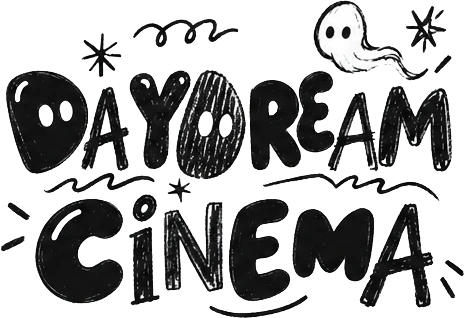
Cart (0)Featured tonight, Screen 1
Echo takes the stage in a moonlit bamboo forest, and the cherry blossoms refuse to stay in the background.
Pick a time to save a seat
Souvenirs from the lobby
Meet the leads
Favorite genres: adventure, westerns, space
Echo wears every feeling on the outside. Laughs loudest, cheers at every chase and is usually the first one climbing onto the stage to join the heroes.
Explore Echo’s wardrobe →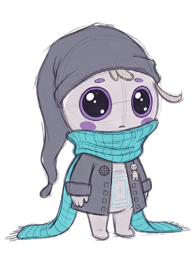
Favorite genres: mysteries, noir, quiet dramas
Mono is quieter, watching from the back row and noticing what everyone else misses. The feelings run deep, and the best clues usually end up in Mono’s sketchbook.
Six feelings who never miss a screening
Mix hats, tops, bottoms and boots from Echo’s usher, western and space looks.
Whole outfits
Scroll sideways through each set’s stills
Moss grows through the red carpet, wildflowers fill the aisles and the projector still hums. Wherever Mono has wandered, the walls fade back into pencil lines, half built and half drawn.
Stills from around the building
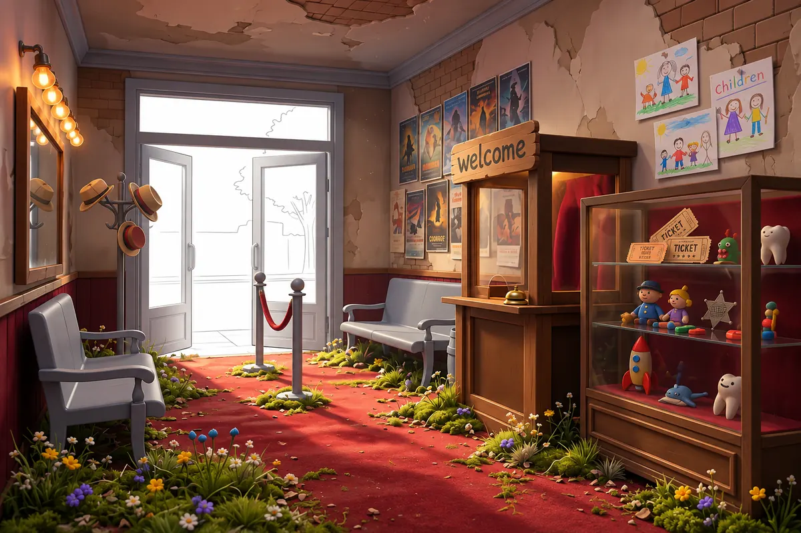
The box office bell still rings. Old posters, children’s drawings and a case of lost-and-found toys wait for visitors who stopped coming.
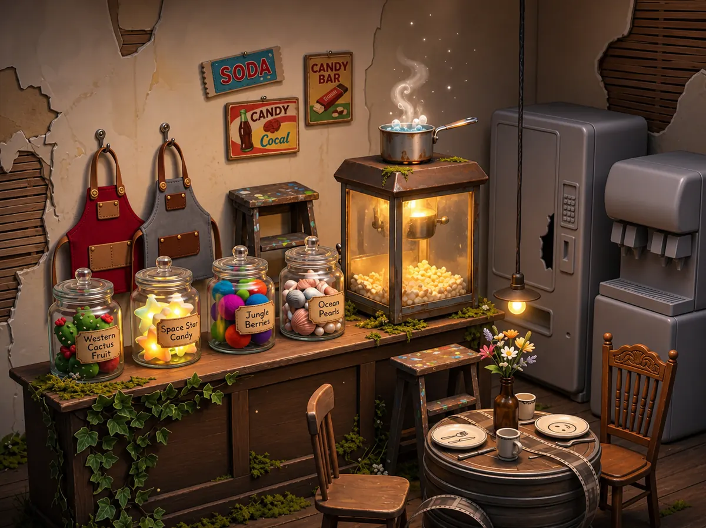
The popcorn machine still glows. Jars of Western Cactus Fruit, Space Star Candy, Jungle Berries and Ocean Pearls line the counter, with two aprons waiting for their shift.
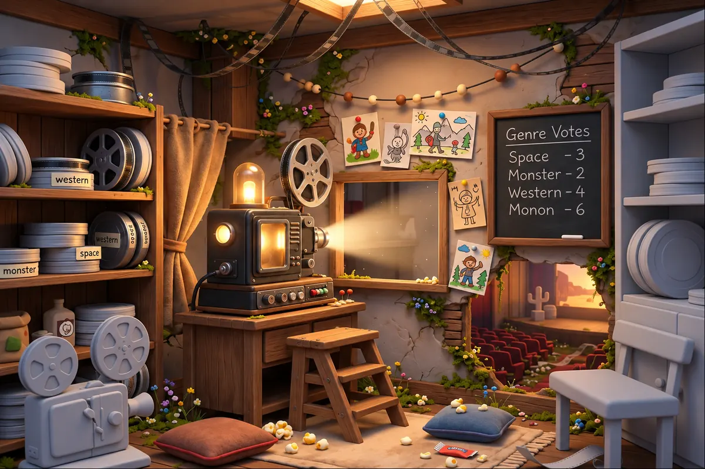
The heart of the building. The old projector beams through the little window into the auditorium, and a chalkboard keeps score of tonight’s genre votes.
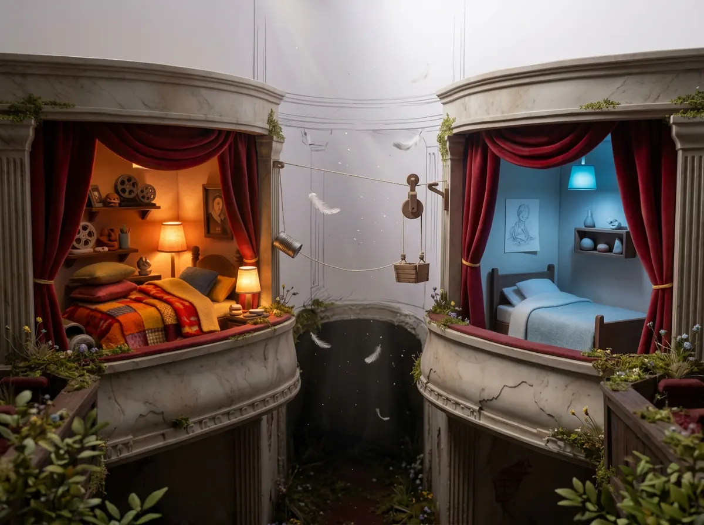
Two private boxes above the auditorium became the twins’ bedrooms, linked by a tin-can telephone and a little pulley basket for passing notes.
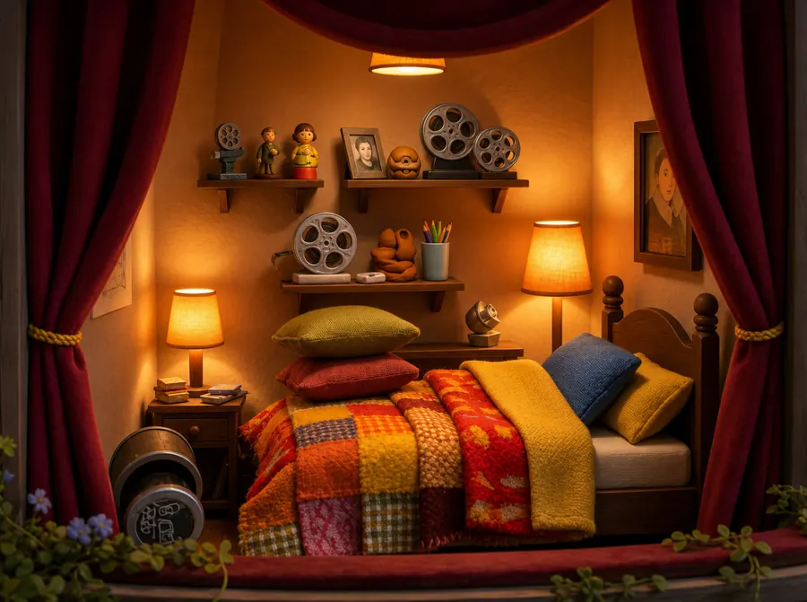
Warm lamps, a heap of patchwork blankets and shelves crowded with film reels and keepsakes.
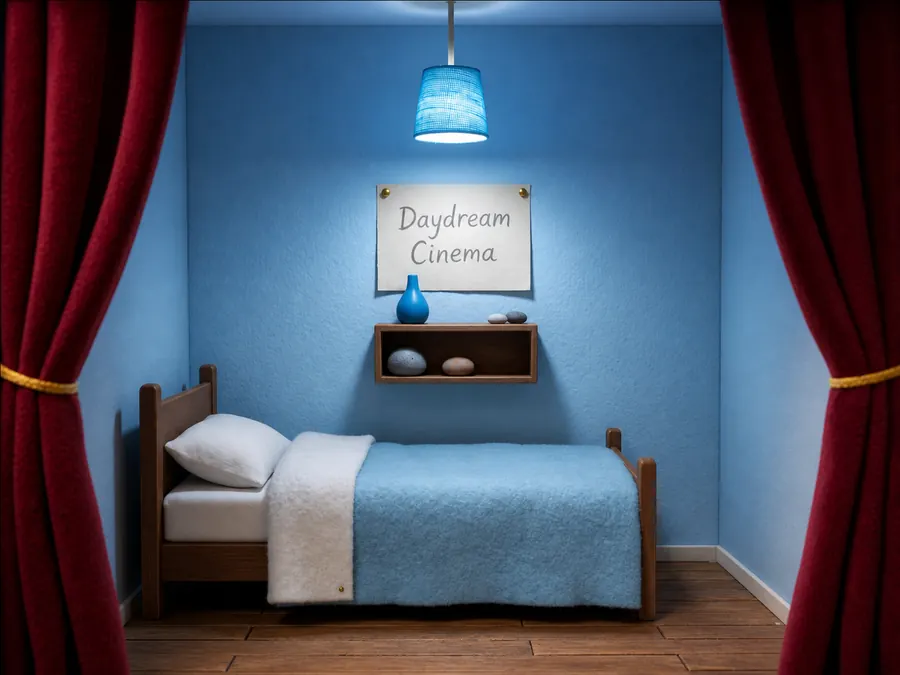
Quiet and blue. One lamp, a few smooth stones and a hand-lettered sign saying where home is.
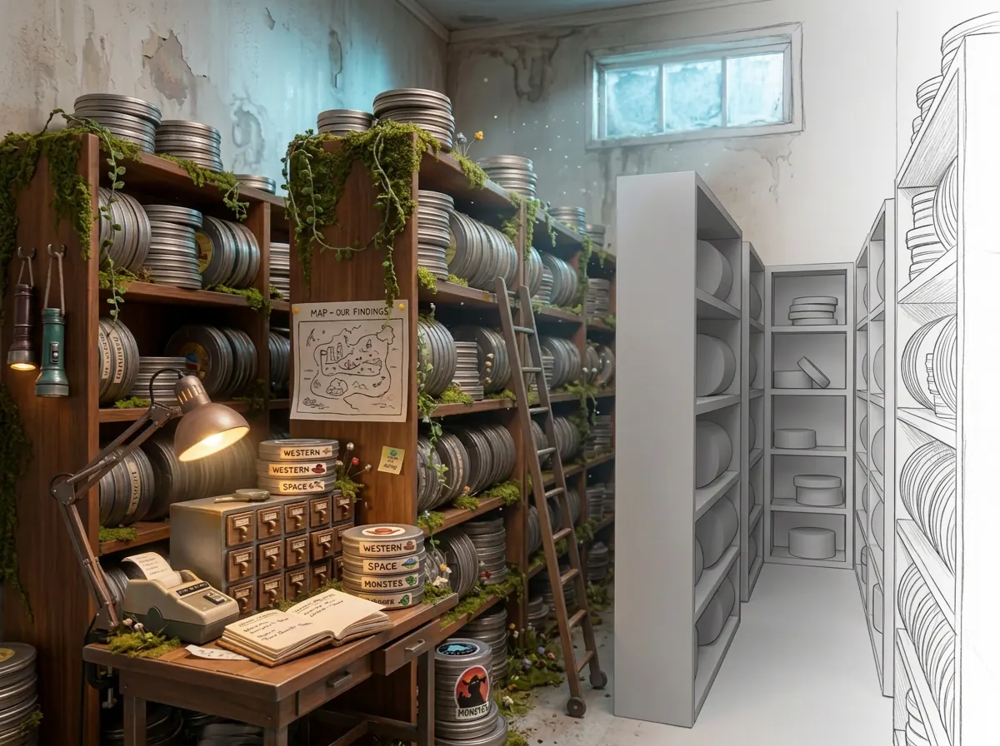
Shelves of film cans sorted into westerns, space and monsters, a hand-drawn map of the twins’ findings and a label maker that never rests.
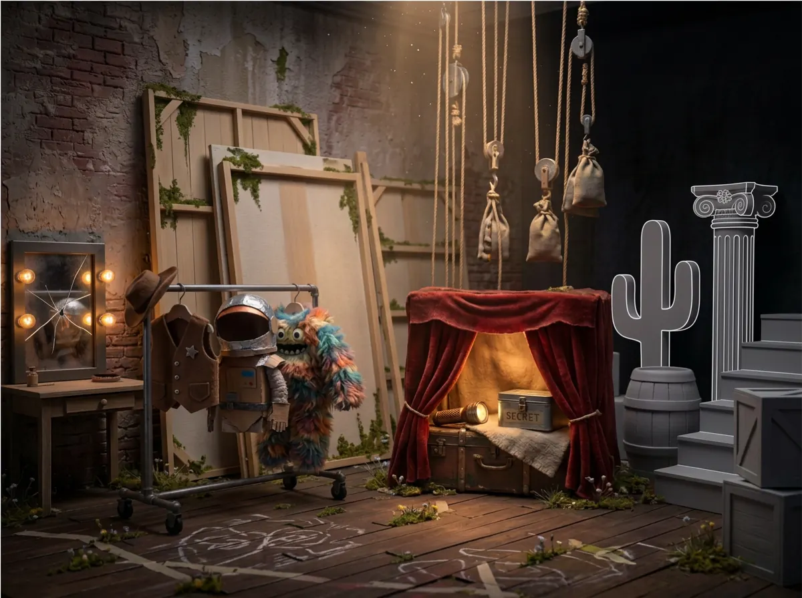
Costumes on a rolling rack, painted flats, sandbags on pulleys and a curtained trunk marked secret.
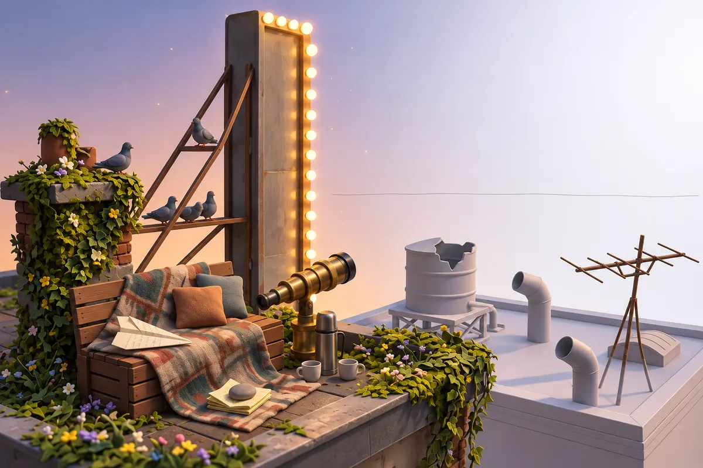
Up by the marquee, the twins keep a bench, a blanket, a telescope and a stack of paper planes. The pigeons are regulars.
An explorable tour of every room, from the entrance to the rooftop, is in production.